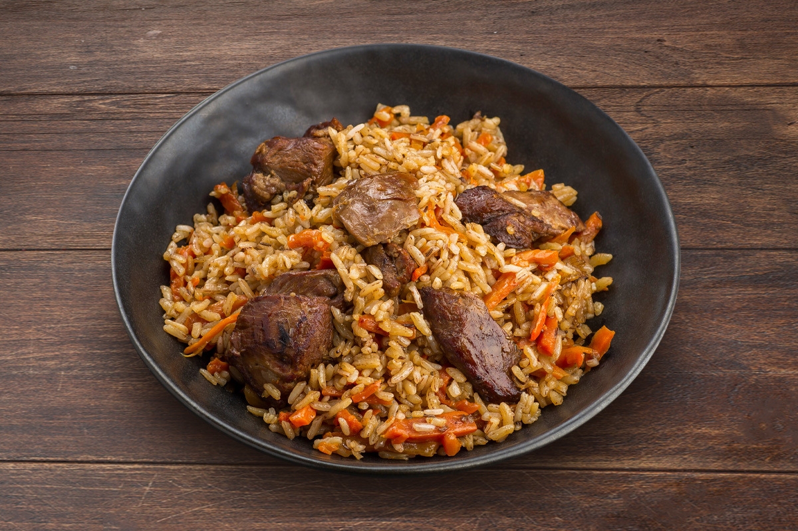

Узбекский плов

Ингредиенты
- Рис (лучше девзира) - 500 г
- Баранина - 500 г
- Морковь - 500 г
- Лук - 3 шт
- Чеснок - 2 головки
- Растительное масло - 150 мл
- Зира - 1 ч.л.
- Барбарис - 1 ч.л.
- Куркума - 0.5 ч.л.
- Соль - по вкусу
Способ приготовления
- Нарежьте баранину крупными кусками, морковь соломкой, лук полукольцами.
- Разогрейте масло в казане, обжарьте мясо до румяной корочки.
- Добавьте лук, затем морковь, жарьте 10 минут.
- Залейте кипятком (2 см выше мяса), добавьте специи, тушите 40 минут.
- Промойте рис, выложите ровным слоем на мясо.
- Воткните в рис головки чеснока, залейте водой (на 1.5 см выше риса).
- Готовьте на сильном огне 15 минут, затем на слабом еще 20 минут.
- Перемешайте перед подачей.
Советы от шефа
Настоящий плов готовится только в казане. Не перемешивайте плов во время приготовления - это нарушит слои. Дайте плову настояться 15 минут под крышкой после приготовления.